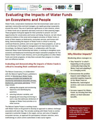
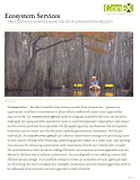

Brochures
This page contains brochures, 2-pagers, white papers ,and other materials from the Natural Capital Project as well as a few from our partners. These documents summarize different aspects of NatCap's work and programs, including our approach, our software, and our demonstration sites.
If you are interested in The Natural Capital Project's books and journal articles, click here.
Overview
These publications give a general overview of the Natural Capital Project, what we do, and the tools we use.
 |
The Natural Capital Project BrochureA summary of our mission, our vision, what we do, and how we do it. |
 |
InVEST BrochureA summary of the Natural Capital Project's InVEST software, what it is used for, and how it works. |
 |
RIOS BrochureA description of the Natural Capital Project's RIOS software, what it is used for, and how it works. |
OPAL BrochureA description of the Natural Capital Project's OPAL software, what it is used for, and how it works. |
InVEST Brochure for BusinessA description of how ecosystem services can affect businesses, and how InVEST can quantify these effects. |
Marine InVEST Brochure featuring BelizeA summary of how InVEST can be used to map and value coastal and oceanic services and how it applies to our work in Belize. |
Stanford Woods Institute on the Environment Natural Capital Project BrochureA summary of our mission, our goals, who we are, and our InVEST software. |
Scenarios for InVEST
Scenarios are essentially visions of alternative futures, which are frequently necessary for modeling changes in ecosystem services under different policy efforts. These publications go over best practices for how to create and use scenarios for your own work, explain how NatCap uses scenarios, and cover several case studies of how we have used scenarios in different situations.
Scenarios for InVEST: A PrimerSummaries of how scenarios are used in InVEST, suggestions for their effective use, and examples of their utilization. |

InVEST Scenarios Case Study: Borneo, IndonesiaAn overview of how scenarios were used for land-use decision making in Borneo. |
InVEST Scenarios Case Study: Coastal BelizeAn overview of how scenarios were used for making coastal and marine spatial planning decisions in Belize. |
 |
InVEST Scenarios Case Study: Eastern Arc Mountains, TanzaniaAn overview of how scenarios were used for land-use decision making in Tanzania. |
InVEST Scenarios Case Study: Hawaii, USAAn overview of how scenarios were used for land-use decision making in Hawaii. |
InVEST Scenarios Case Study: Oregon, USAAn overview of how scenarios were used for land-use decision making in Oregon. |
 |
InVEST Scenarios Case Study: Sumatra, IndonesiaAn overview of how scenarios were used for land-use decision making in Sumatra. |
InVEST Scenarios Case Study: Vancouver Island, CanadaAn overview of how scenarios were used for making coastal and marine spatial planning decisions on Vancouver Island, BC. |
InVEST in Practice
A series of step-by-step guides on how to use NatCap's tools and approach in several different types of planning and policy contexts. Each brochure presents a general protocol for applying InVEST and/or RIOS software, defines key issues for a specific planning context, and reviews examples of NatCap's applications of the software to real decisions.
 |
Coastal and Marine Spatial Planning with InVESTA step-by-step guide on how to use NatCap's approach and tools in Coastal and Marine Spatial Planning decisions. |
Environmental and Social Impact AssessmentsA step-by-step guide on how to use NatCap's approach and tools in environmental and social impact assessment decisions. |
Land-based carbon offsets with InVESTA step-by-step guide on how to use NatCap's approach and tools in land-based carbon offset decisions. |
 |
Land Use Planning with InVESTA step-by-step guide on how to use NatCap's approach and tools in land use planning decisions. |
 |
Payments for Watershed Services and Water FundsA step-by-step guide on how to use NatCap's approach and tools in payment for watershed services programs and water funds decisions. |
 |
Strategic Environmental Assessments with InVESTA step-by-step guide on how to use NatCap's approach and tools in strategic environmental assessment decisions. |
Places and Projects
These brochures summarize the Natural Capital Project's work in various sites around the globe. They describe the location and its accompanying opportunities and challenges, as well as what the Natural Capital Project is currently doing there and what it has already accomplished.
Coastal Development in BelizeA summary of the Natural Capital Project's work in Belize. |
 |
Enlisting Ecosystem Services with the DoDA summary of the Natural Capital Project's work with the U.S. Department of Defense. |
Informing Land-Use Plans in Central SumatraA summary of the Natural Capital Project's work in Sumatra. |
 |
Marine Spatial Planning on Vancouver IslandA summary of the Natural Capital Project's work in Vancouver Island. |
 |
Natural Capital Project in Hawai'iA summary of the Natural Capital Project's work in Hawai'i. |
Natural Capital Project in the Heart of BorneoA summary of the Natural Capital Project's work in Borneo. |
 |
Securing China's Natural CapitalA summary of the Natural Capital Project's work in China. |
Valuing the Arc: Ecosystem Services in TanzaniaA summary of the Natural Capital Project's work in Tanzania. |
 |
Water Funds In Latin AmericaA summary of the Natural Capital Project's work in Latin America. |
Partner Documents
Brochures, publicity materials, and reports from the Natural Capital Project's partners, regarding the Natural Capital Project's programs and tools.
Building a Green Economy in Borneo: Assessing Outcomes for Ecosystem Services under Different Business and Policy DecisionsA summary of how the World Wildlife Fund has used InVEST in Borneo. |
InVEST: A Tool for Integrating Ecosystem Services into Policy and Decision-MakingA summary of the uses for InVEST, as described by The Economics of Ecosystems and Biodiversity initiative. |
Valuing the ArcA summary of how the World Wildlife Fund has used InVEST software in the Eastern Arc Mountains of Tanzania. |
Applying the NatCap Approach to Decisions
The Natural Capital Project applies its ecosystem service modeling tools to inform a broad range of policy and planning decisions around the world. These documents help explain how our approach can be used in various situations.
|  |
Evaluating the Impacts of Water Funds on Ecosystems and PeopleA summary of how the Natural Capital Project is working with The Latin American Water Funds Partnership and others to strengthen socio-economic and biophysical monitoring and impact evaluation programs for five distinct Water Funds in Latin America. |
Including Ecosystem Services in MitigationA report presenting a framework for including ecosystem services in mitigation for all development activities. |

Reports
Biofuel Expansion Impacts on Soil Loss in the US MidwestA report on the expanison of biofuel and its impact on soil loss in the US Midwest. |
ConEX: Conservation Learning Exchange
The Nature Conservancy held it's first Conservation Learning Exchange (ConEX) in Vancouver, BC from October 14th to 15th of 2008. These brochures cover information about ecosystem services and resources to get started with an ecosystem services approach, as well as information on Natural Capital Project and our InVEST models. For presentations and other materials from this event, click here.
|  |
Ecosystem Services: Can Ecosystem Services Work for your Conservation Project?A definition of ecosystem services, and criteria for effective use of them as an approach in achieving conservation goals. |
Ecosystem Services: How To Get Started with an Ecosystem Services ApproachA definition of an ecosystem services approach, with a selection of available tools and resources to get started. |
InVEST: Integrated Valuation of Ecosystem Services & TradeoffsAn outline of the methods of Natural Capital Project, focusing on NatCap's InVEST models and approach to valuing ecosystem services. |
The Natural Capital Project: Aligning Economic Forces with ConservationA description of the aspirations and initial efforts of Natural Capital Project, with a summary of demonstration sites. |